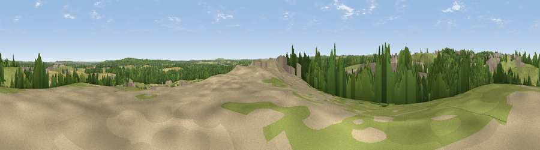

Viewpoint near Hodthorpe
#36538 in England · top 69% of its area beats it · near HodthorpeThe view, rendered

A 360° render of this exact spot computed from the terrain model, tree cover and land cover — summer colours, afternoon light, calibrated against photographs of famous viewpoints. Real trees, hedges and buildings will differ in detail.
The panorama
Grey silhouette: terrain skyline in each direction (720 bearings, Earth curvature and refraction included). Dashed green: skyline with trees (+15 m) and buildings (+8 m) as obstacles. Blue strip: how far the ground is visible on each bearing.
Where the view opens
Wedge length = distance to the farthest visible ground on that bearing (vegetation-aware). Rings at 10, 25 and 50 km.
What fills the view
36% grassland · 20% cropland · 20% built-up · 18% woodland · 5% bare ground ·
Angular shares of the visible panorama (visual magnitude), not map area. Landscape diversity 0.66 (0–1 Shannon).
Key numbers
More beautiful places nearby
The staircase of upgrades: each row has a higher view potential than everything closer. Driving times are estimates from straight-line distance, calibrated against real road routing — check an actual route before setting out.
| Place | Direction | Drive | Score |
|---|---|---|---|
| Viewpoint near Whitwell | WNW · 1 km | ~3 min | 47.2 |
| Viewpoint near Worksop | E · 4 km | ~8 min | 48.1 |
| Fir Hill | NW · 6 km | ~13 min | 50.4 |
| Viewpoint near Meden Vale | SSE · 6 km | ~13 min | 65.2 |
| Burstheart Hill [Thoresby Colliery] | SE · 12 km | ~22 min | 69.3 |
| Viewpoint near Maltby | N · 17 km | ~30 min | 70.8 |
| Crich Stand | SW · 28 km | ~44 min | 73.0 |
| Viewpoint near Wharncliffe Side | NW · 31 km | ~48 min | 75.2 |
53.27309, -1.19434 · source: screening · position refined by local search. Computed location — check access rights before visiting.